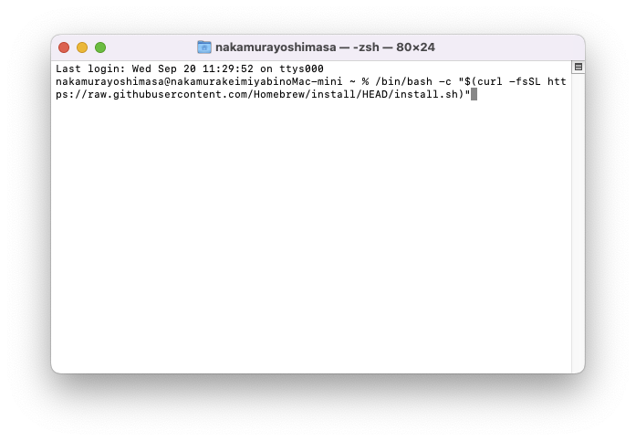
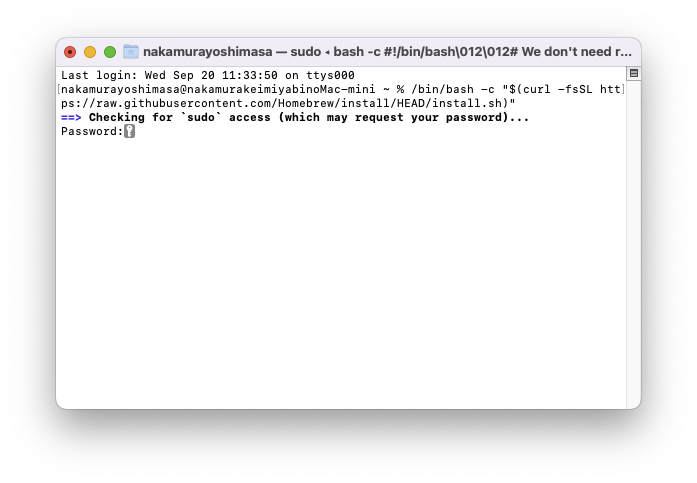
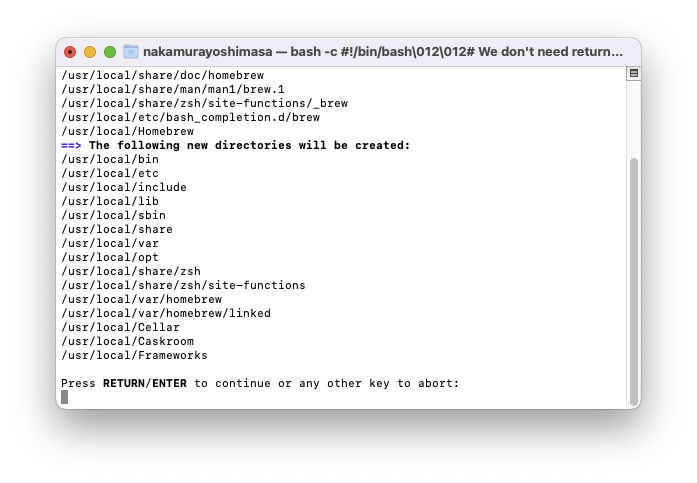
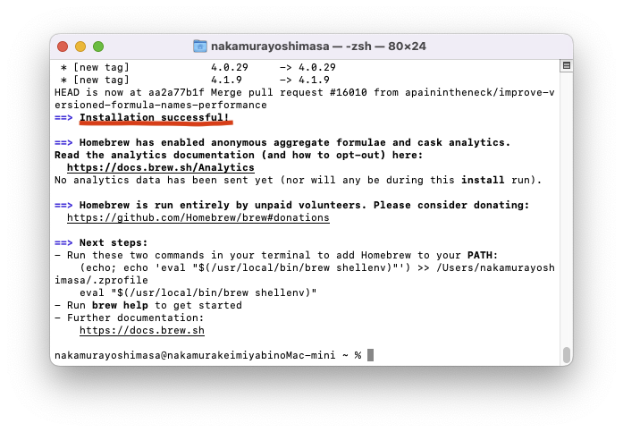

Homebrewを用いたインストール
Homebrewを用いてmacOS上に直接Gazeboをインストールします。
Homebrewとは
HomebrewはmacOSやLinux用のパッケージマネージャーです。
Appleが提供していないライブラリや開発ツールなどを簡単にインストールすることができます。
Homebrewのインストール
ターミナルを開き下記コマンドを入力します。
パスワードを入力します。 
下記が出たらEnterキーを押します。

下記のようにInstallation successfulと表示されていればインストール完了です。

Gazeboのインストール
Gazeboをインストールします。
上記はGazeboのone-linerインストール方法で、他の環境でも同様にインストールできます。 PC環境を自動認識して、適切なインストール方法を選択してくれます。実態としては下記を行っています。
# Homebrewのインストール
ruby -e "$(curl -fsSL https://raw.githubusercontent.com/Homebrew/install/master/install)"
# XQuartzのインストール
brew install homebrew/cask/xquartz
# osrf/simulationリポジトリをタップする(リポジトリ内にアクセス可能にする)
brew tap osrf/simulation
# gazebo11のインストール
brew install gazebo11
Gazeboの動作確認
新しくターミナルを開き、下記を入力して実行します。
下記のような画面が出ればインストール成功です。
Gazeboのアンインストール
アンインストールする方法も記載しておきます。(講習会終了後削除していただて構いません)